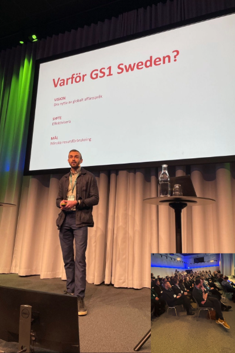

Jag brinner för att driva digital tillväxt och har över 10 års erfarenhet från ledande roller inom e-handel, logistik och affärsutveckling. Jag hjälper företag att transformera sina affärer genom data, innovation och moderna arbetsmetoder.
Framgångsnycklar för digital transformation
Samtal om Apoteas tillväxtresa, digitalisering och Foodlas nya angreppssätt för livsmedelssektorn.
Hur man bygger en skalbar digital säljstrategi med rätt verktyg och processer.
Se webbinar →Föreläste inför 250 personer om vikten av standardisering, effektivisering och minskad resursförbrukning genom GS1.
Email: erikfranklind@hotmail.com
LinkedIn: linkedin.com/in/erik-franklind-712427124